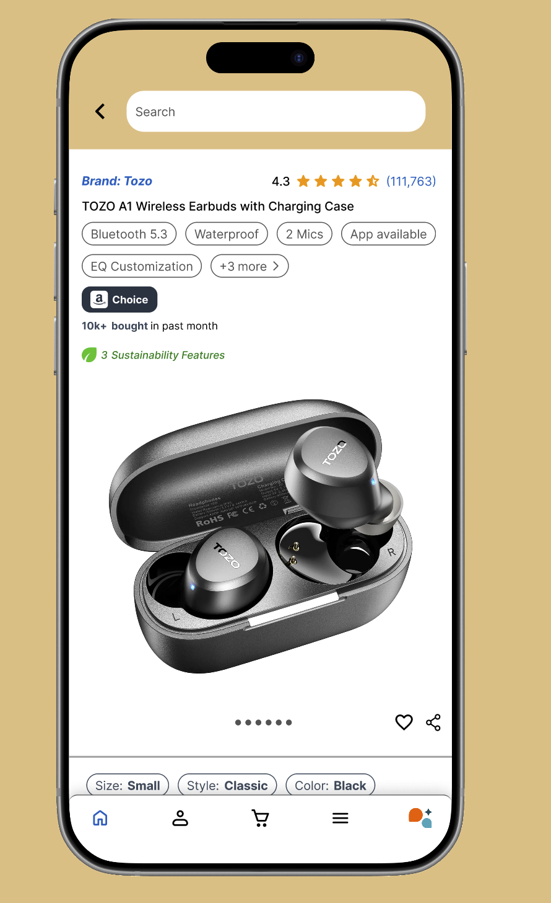
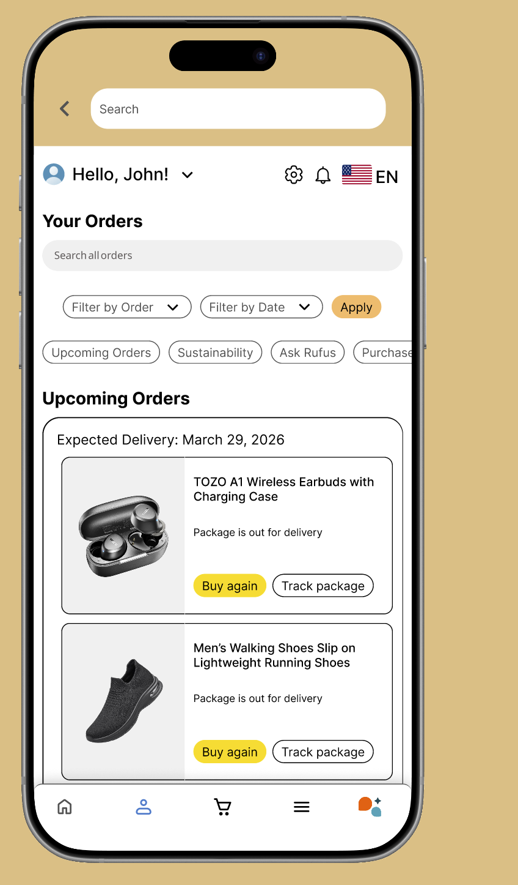
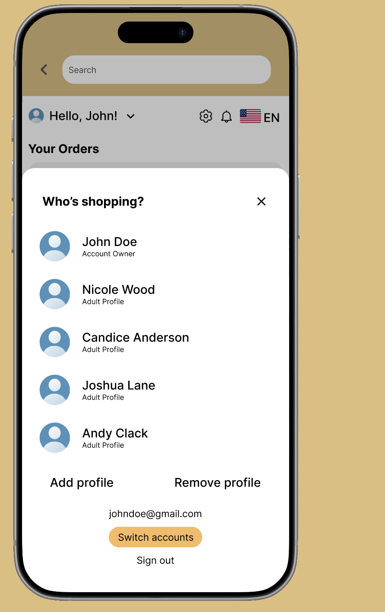
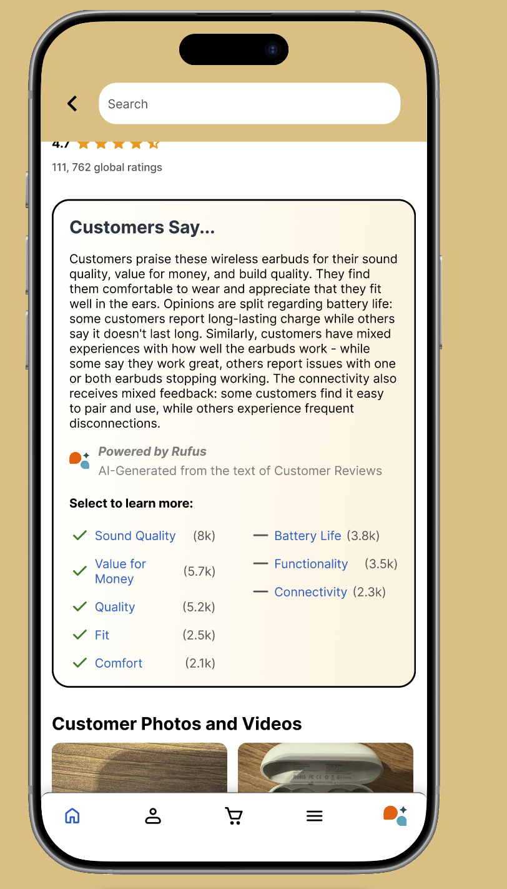

{kind=link}
{kind=link}
{kind=link}
{kind=link}
Product overload
Product pages stack titles, price details, promotions, reviews, ads, and recommendations into one crowded hierarchy.
AMAZON MOBILE / INDEPENDENT STUDENT REDESIGN
A student team redesign of Amazon’s product and orders pages. We used survey research to explore clearer product information, easier order tracking, and separate profiles for shared accounts.
Try the prototype ↓SCREEN STUDIES / SELECT TO ENLARGE
Four prototype views: product details, orders, profile switching, and review summaries.




Our student redesign explored how Amazon’s mobile shopping experience could feel clearer while keeping familiar patterns. We focused on the information shoppers need to evaluate products and manage orders.
Our focus stayed on two connected moments: the product page, where shoppers compare information before buying, and the orders area, where shared-account users return to track and manage purchases.
Product pages stack titles, price details, promotions, reviews, ads, and recommendations into one crowded hierarchy.
Orders from multiple people can appear together on shared accounts, making it harder to tell what belongs to whom.
Low transparency and dense layouts make important actions and details slower to find.
Survey insights shaped a clearer path through product information, orders, and shared profiles.
Our team surveyed 80 participants in 3-4 days. Most participants were college-aged, with a full age range of 17-51. The presentation reports that 80% were college students aged 18–21, so the sample primarily reflects younger shoppers. The findings informed our design direction; they do not establish that the redesign improved usability.
Users wanted faster access to product prices, reviews, images, and key details.
Design implication: make the first scan cleaner before asking users to dig deeper.Shared accounts made order history feel mixed and harder to interpret.
Design implication: add a clearer identity layer before browsing and managing purchases.Dense pages made transparency harder even when the information existed.
Design implication: summarize complexity, then reveal secondary details progressively.Savhon Morales is a 20-year-old college student who wants to compare products quickly, reduce scrolling, find prices, reviews, and images, and navigate purchases without fighting the interface.
Compare products quickly, find essential details, and move through purchases with less friction.
Cluttered screens, difficult comparison, buried details, and mixed shared-account orders.
The next step was turning research findings into navigation and interface decisions.
The presentation documents four structural decisions. Here is what each changes and why it matters.
A readable display title separates the main product name from dense detail, while feature chips make comparison faster.
Primary price and delivery information appear first, with secondary details available through progressive disclosure.
Search, filters, and upcoming-delivery grouping help users find time-sensitive purchases before scrolling through history.
Named household profiles clarify who is shopping before recommendations, cart items, and orders get mixed.
Keep recognizable commerce patterns so the app still feels like Amazon.
Make tracking, filtering, buying, and switching profiles easier to spot.
Use chips and review themes to help shoppers understand dense information faster.
Keep secondary details accessible without forcing everything into the first view.
The high-fidelity screens apply the same logic across the full shopping journey: select the right profile, manage orders clearly, evaluate product details, and understand customer reviews without losing the behaviors shoppers already know.
Browse the real screens and open the interactive prototype to explore the connected flow.
The prototype connects profile selection into browsing and order management, then lets shoppers compare, track, or buy from a clearer interface. The flow moves from select profile to browse or manage to act with clarity.
The hardest part was improving Amazon without making it stop feeling familiar. This project taught me to treat prototyping as system design: research shaped low-fidelity decisions, low-fidelity structure shaped interface patterns, and the final flow had to behave like one connected shopping experience.
Next, I would test profile discoverability, time-to-find an order, and whether shoppers understand the review summary faster than the current experience.
next: TrimSpend